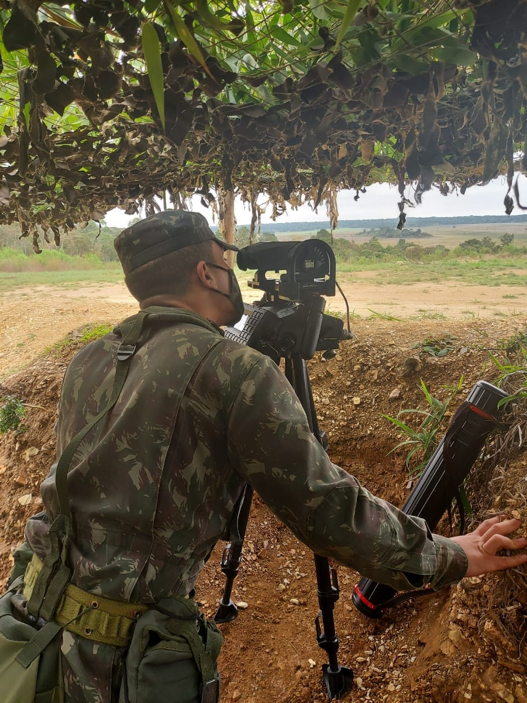

Bem-vindo!
Meu nome é Jonathan Henrique Pereira Martins, nascido em 2001 e formado no ensino médio em 2019.
O meu esporte favorito de se praticar é o muay thai.
No ano de 2020, servi ao Brasil através do serviço militar obrigatório no Exército Brasileiro.
O meu hobby favorito é jogar videogames.

